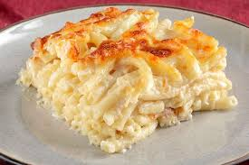

...Fırında Makarna...
Makarna mutfaklarımızda çoğunlukla olan, severek tüketilen bir
lezzettir. Haşlanmış ve soslu makarna tariflerinden artık sıkılanlar
için kolay ve en lezzetli şekliyle beşamelli fırında makarna tarifimi
sizlerle paylaşıyorum.
Yazar: Mustafa Ciğersiz

/>
Kaç Kişilik: 4 Kişilik
Hazırlanma Süresi: 30 Dakika
Pişirme Süresi: 30 Dakika
Fırında Makarna İçin Malzemeler
Ana Malzemeler
- 1 paket makarna
- 1 tatlı kaşığı tuz
- Su
Beşamel Sos İçin Malzemeler
- Un
- Süt
- Yağ
- Tuz
- Muskat rendesi (isteğe bağlı)
Üzeri İçin
Fırında Makarna Nasıl Yapılır
- Makarnayı haşlayın.
- Beşamel sosu hazırlayın.
- Makarnayı sosla karıştırın.
- Fırın kabına yerleştirin.
- Üzerine kaşar peyniri ekleyin.
- Fırında pişirin:
Afiyet olsun.